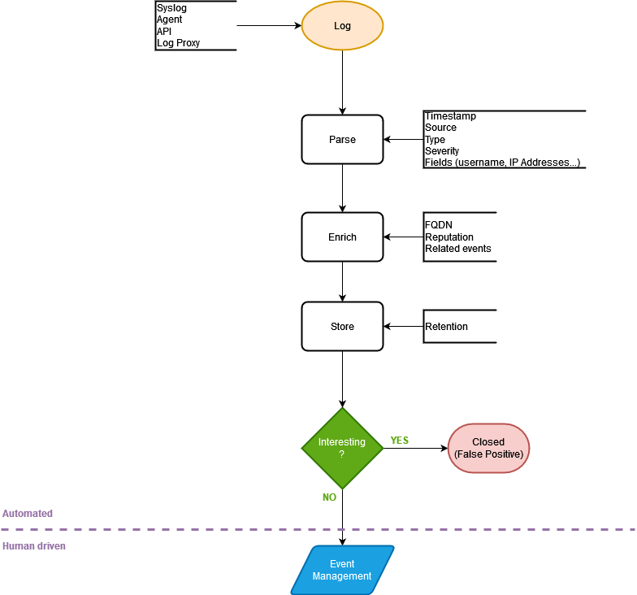

Log management is more than a log collector¶

Many companies (hopefully) are collecting logs in a central system. The reason besides that is for compliance and sometimes for root cause analysis. In this post, I want to recap that log management is not just about log collections, and why and how the process should be designed.
Why do we collect logs?¶
In short log management is about collecting logs, and storing them for analysis. By design any system is logging locally, so we need to clarify why we want a formal process for log management.
Let's start from the compliance part: log management is mentioned in ISO 27001 Annex A 12.4.
Event logs should be produced, retained, and regularly reviewed to record user activities, exceptions, defects, and information security events.
Even if GDPR does not specifically mention log collection, Art.5 refers to the ability to demonstrate:
The controller shall be responsible for, and be able to demonstrate compliance with, paragraph 1 ('accountability').
Moreover in Italy, we have a special mention about logging (Amministratori di Sistema or AdS, and AGID minimal requirements):
Caratteristiche di mantenimento dell´integrità dei dati raccolti dai sistemi di log sono in genere disponibili nei più diffusi sistemi operativi, o possono esservi agevolmente integrate con apposito software. Il requisito può essere ragionevolmente soddisfatto con la strumentazione software in dotazione, nei casi più semplici, e con l´eventuale esportazione periodica dei dati di log su supporti di memorizzazione non riscrivibili. In casi più complessi i titolari potranno ritenere di adottare sistemi più sofisticati, quali i log server centralizzati e "certificati". Tuttavia il provvedimento del Garante non affronta questi aspetti, prevedendo soltanto, come forma minima di documentazione dell´uso di un sistema informativo, la generazione del log degli "accessi" (login) e la loro archiviazione per almeno sei mesi in condizioni di ragionevole sicurezza e con strumenti adatti, in base al contesto in cui avviene il trattamento, senza alcuna pretesa di instaurare in modo generalizzato, e solo con le prescrizioni del provvedimento, un regime rigoroso di registrazione degli usage data dei sistemi informativi. Le misure minime sono un importante supporto metodologico, oltre che un mezzo attraverso il quale le Amministrazioni, soprattutto quelle più piccole e che hanno meno possibilità di avvalersi di professionalità specifiche, possono verificare autonomamente la propria situazione e avviare un percorso di monitoraggio e miglioramento.
Even if the mention is specific to Italian companies, it makes sense: we all should be able to review systems and users' activities regularly or during an incident analysis. Being able to demonstrate what is happened in an incident, means we have our infrastructures (and data) under control. That's the GDPR accountability principle.
How do we collect logs?¶
We know that any well-designed system and application implements local logging by default. Having dozens, hundreds, or thousands of log sources means we must collect logs in a central location. Otherwise, we will spend days just correlating events between different systems. Moreover, if a system is compromised, logs are probably compromised too.
So we need:
- to collect logs from multiple sources in central storage;
- that timestamps are coherent;
- categorize logs based on the content (debug logs, administrative events, errors...);
- set retention based on log category (we probably want to discard debug logs after a few days, whereas we want to maintain administrative logs for months);
- preserve CIA attributes (Confidentiality, Integrity, Availability);
- to normalize and correlate logs based on usernames, IP addresses, timestamp, source...
And we probably want to collect logs from:
- security appliances and applications (firewall, EDR, WAF, NAC, IDS/IPS...);
- ingress and egress web gateways (load balancer, web proxy...);
- authentication systems (LDAP, Active Directory, remote access, servers, endpoints, appliances...);
- network services (DHCP, DNS...);
- application;
- ...
What do we do with logs?¶
We are collecting logs, not for compliance, but because they have a value. We can use them to:
- analyze application errors (new bugs after a software release);
- highlight anomalies (potential attacks, data exfiltration);
- review activities (verify administrator logs for permission abuse);
- analyze root cause (problem management);
- threat hunting (find ongoing attacks);
- activate automatic alerting and reporting.
We are realizing that maybe we don't need a simple log collector, maybe we need a SIEM because most of the tasks we expect to are about security management (threat hunting, finding users abusing permissions...). The answer is yes: we do log analysis because of security purposes. We are also collecting application logs for debugging, but they serve for security too.
Even so, we probably want to evaluate log collectors because:
- we have to review user activities (GDPR requisite);
- we want to debug applications and network issues (they are security incidents too, but rarely managed by SOC).
- SIEM solutions are usually more expensive and many companies have to decide which logs must be discarded.
Ideally, the log management process should be almost fully automated:

Conclusions¶
I am convinced that there is no distinction between incidents and security incidents. Because of the GDPR, any event impacting CIA attributes of personal data is a data violation (or data breach). Based on that most events are security potentially security events (we can discards debug and maybe informational events). With this idea any SOC should be able to identify cyber threats as well as network and application issues.
But the real world works differently and I know I'm an idealist.
Besides that, we need to collect logs and improve alerting and reporting to obtain a resilient infrastructure. And this is part of the log management process.